Shop frontage about 3.80 m wide, on the ground floor of a narrow unit. The unit above is separate: the frosted door on the far right leads to it. The images are AI-generated visualisations placed on the real photo of the façade, not technical drawings. Materials are proposals to be validated with OX (heat, sun and dust in Riyadh, budget, lead times). No price is given: everything remains to be costed. Dimensions to be confirmed on site.
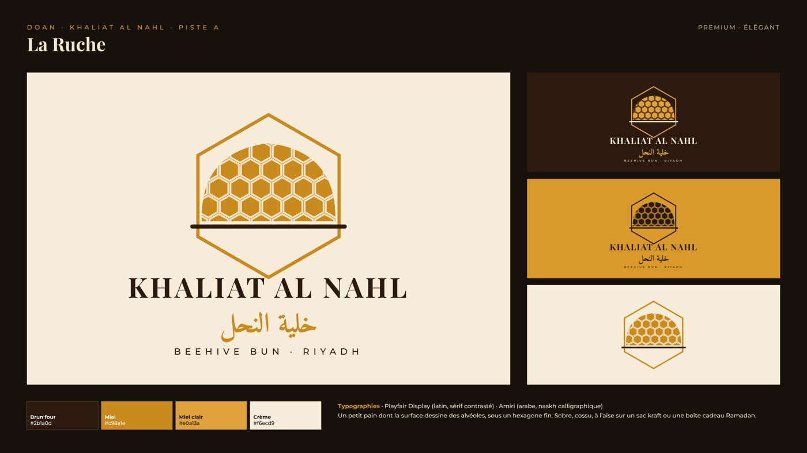
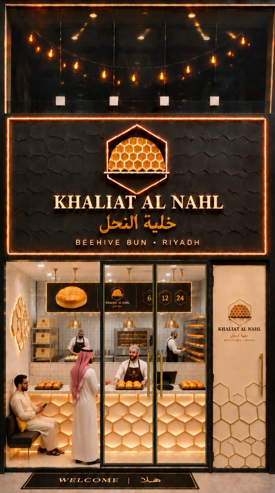
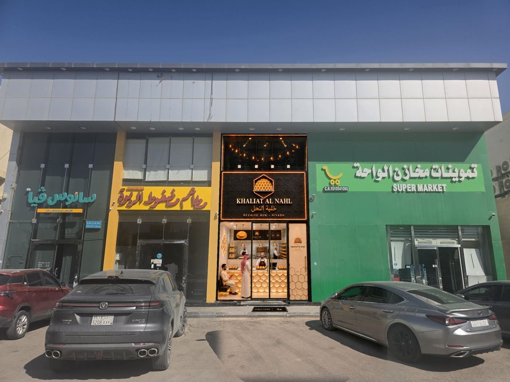
“La Ruche” (The Beehive) = خلية النحل: the bun looks like a beehive, with its little rolls pressed together.
A small bun whose surface draws honeycomb cells, under a fine hexagon. Understated and rich: it works as well on the façade as on a kraft bag or a Ramadan gift box. Typefaces: Playfair Display (Latin, high-contrast serif) and Amiri (Arabic, calligraphic naskh).
| Area | Material | Why / point of attention |
|---|---|---|
| Sign band | Matt black aluminium composite panel, CNC-milled honeycomb relief | Light, stable in heat; relief = cast shadow, premium effect |
| Logo and letters | Stainless steel or aluminium with brushed brass finish, LED back-lighting (halo) | Solid brass tarnishes; prefer a treated finish (PVD or lacquered) |
| Frames and glazing | Black powder-coated aluminium, clear toughened glass, brushed brass handles | Anti-UV glazing advised (direct sun) |
| Counter front | Honeycomb panels in solid surface (Corian type) or moulded fibre-cement, LED behind | Easy to clean, discreet joints |
| Counter top | Sintered stone or light quartz | More resistant to stains and oil than natural marble |
| Kitchen and low wall | White glazed ceramic tiles, grey grout | Food hygiene, washable; the low wall is tiled like the kitchen |
| Sticker door (upstairs) | Opaque frosted film printed on glass or solid panel | Hides the staircase; honeycomb pattern aligned with the façade |
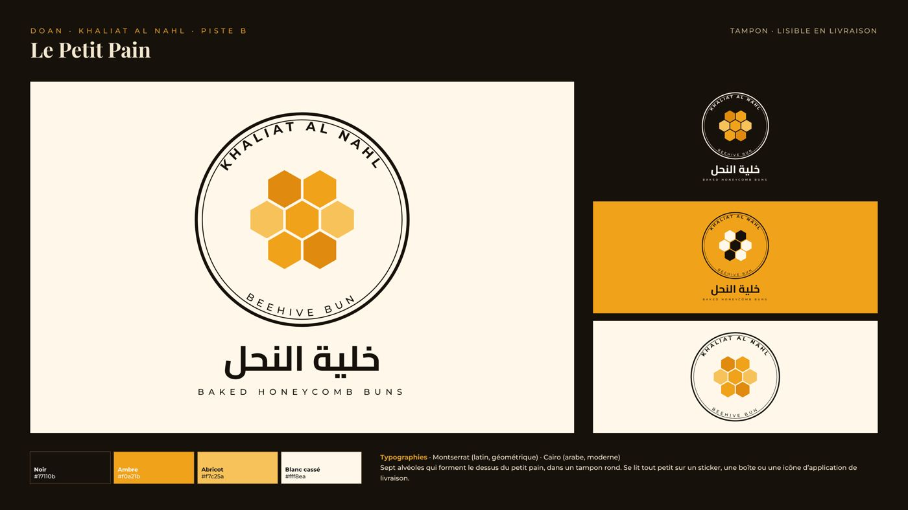
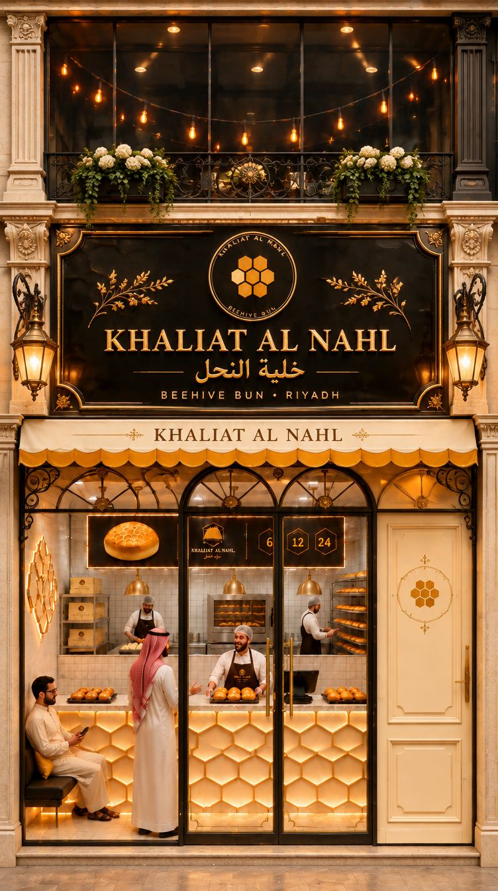
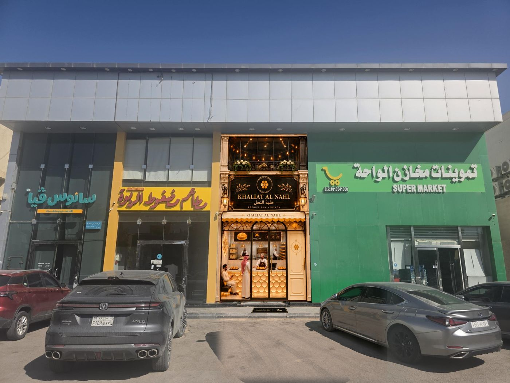
“Le Petit Pain” (The Little Bun): the name simply says the product, a small bun to share, easy for everyone to remember and pronounce.
Seven cells form the top of a little bun, inside a round stamp. It reads even when tiny on a sticker, a box or a delivery-app icon. Typefaces: Montserrat (Latin, geometric) and Cairo (Arabic, modern).
| Area | Material | Why / point of attention |
|---|---|---|
| Pilasters, cornice, ornaments (columns and mouldings) | Moulded GRC (glass-fibre reinforced concrete), painted cream, or reconstituted stone | Much lighter and cheaper than solid stone, copes well with heat; natural stone to be avoided (weight, cost) |
| Sign panel | Glossy black lacquered exterior panel, gold stainless letters or gold film | Gloss lacquer shows dust: plan regular cleaning |
| Scalloped awning | Solution-dyed acrylic canvas (UV resistant) on aluminium frame | Ordinary canvas fades quickly in Saudi sun; check municipality rules on projection over the pavement |
| Glazed arches and glazing bars | Black powder-coated aluminium, toughened glass | Arches cost more to make than straight glazing |
| Ironwork and lanterns | Powder-coated steel or treated brass, waterproof exterior LED lanterns (IP44 or higher) | Bare wrought iron rusts; prefer treated steel |
| Planters | UV-resistant artificial foliage or stabilised plants | Fresh flowers survive poorly in Riyadh without regular watering |
| Upstairs door | Cream lacquered door, inlaid brass honeycomb ornament | Consistent with the façade, discreet |
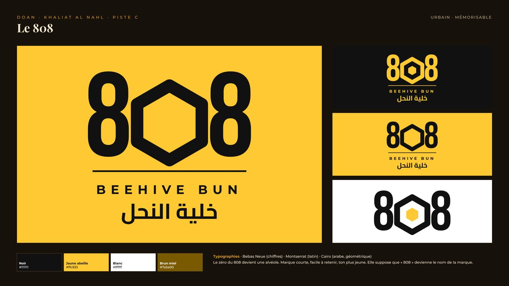
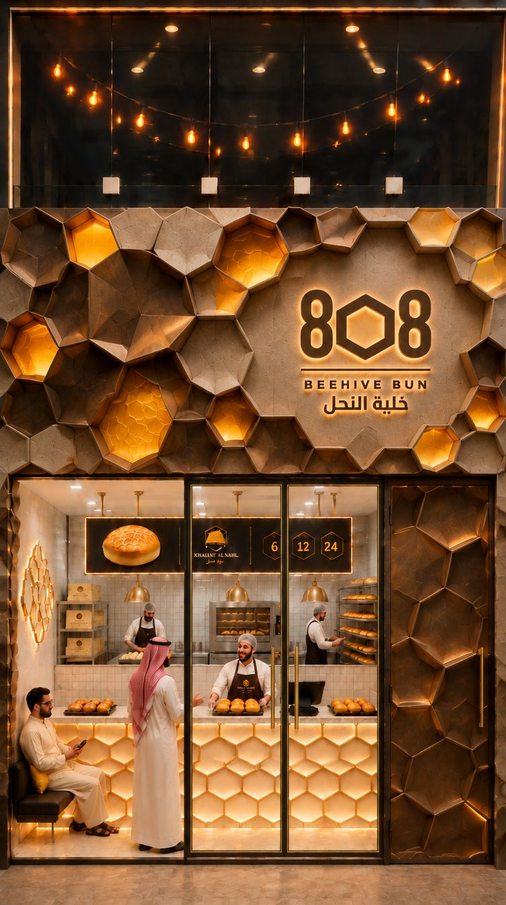
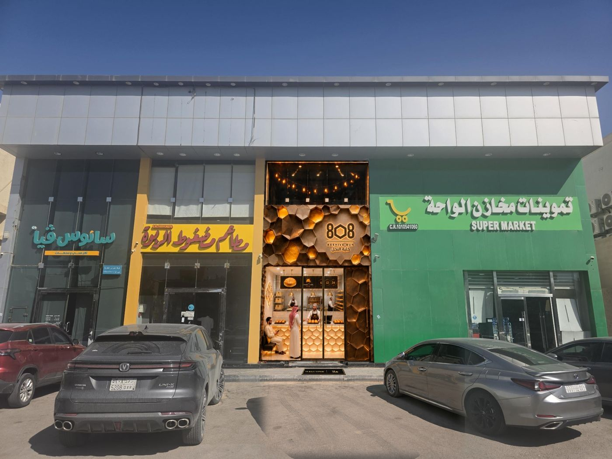
The zero of “808” becomes a honeycomb cell. A short, memorable brand with a younger tone. It assumes “808” becomes the brand's name in everyday use. Typefaces: Bebas Neue (numerals), Montserrat (Latin), Cairo (Arabic, geometric).
| Area | Material | Why / point of attention |
|---|---|---|
| Relief honeycomb wall | Moulded GRC panels, bronze metallic finish, or stamped aluminium treated bronze | The most spectacular but the costliest and slowest to make (custom moulds); to validate with a fabricator |
| Lit cells | Translucent resin or acrylic tinted honey, warm LED behind | Plan access to maintain the LEDs |
| 808 logo | Engraved in the panel, LED halo lighting | Medium size, off-centre: lets the relief breathe |
| Upstairs door | Stamped aluminium cassette with honeycomb pattern, bronze finish | Same language as the wall |
| Counter and interior | As La Ruche (solid surface, sintered stone, white tiles) | The interior stays common to all brands |
Same 808 logo (zero = cell), here treated as a hanging neon: the logo becomes the central object of the façade.
| Area | Material | Why / point of attention |
|---|---|---|
| Concrete backdrop | Fibre-cement or GRC panels with board-marked concrete texture | Concrete look without the weight or cost of real concrete |
| 808 sign | Flexible LED neon (silicone), yellow, waterproof IP65, on steel chains | More durable and less hot than real glass neon |
| Blackened steel | Black or patinated powder-coated steel, clear glazing | Frame and door; real patina may rust: prefer powder coating |
| Menu box | Black aluminium frame, back-lit print on translucent film | Content to be replaced with the real menu later |
| Lamps | Black industrial waterproof exterior wall lights | Same family as the interior |
| Honeycomb pattern | Painted stencil or cut yellow vinyl | Easy to renew |
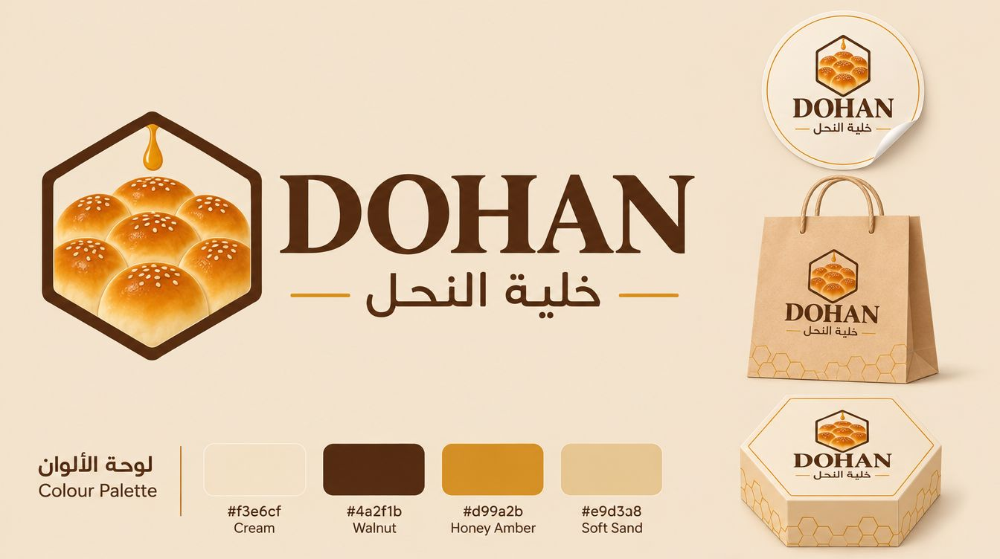
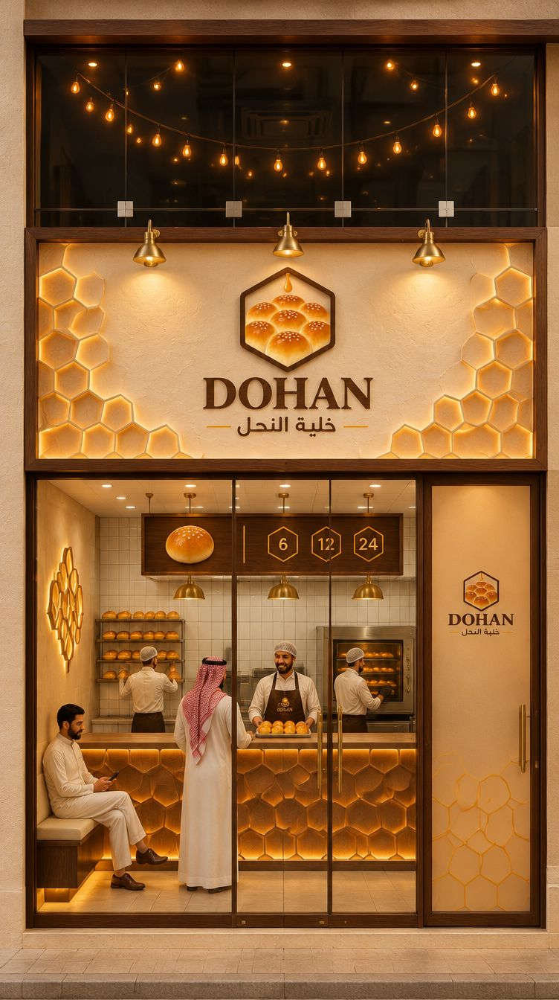
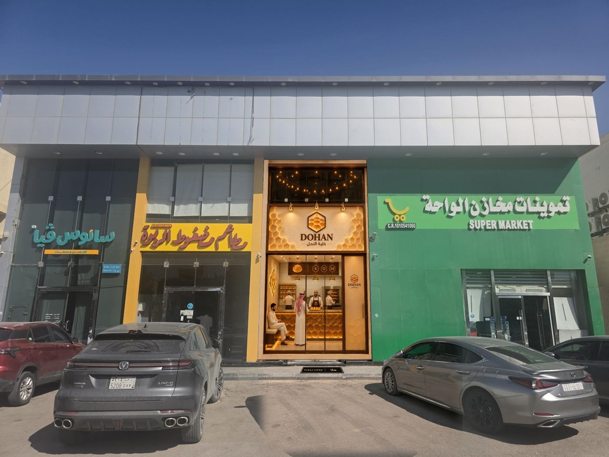
“Dohan” is the project's original name, given by you as “honeycomb” in Arabic. I could not confirm it: the safe Arabic word for “beehive / honeycomb” is خلية النحل (Khaliat Al Nahl), which accompanies the name on the logo.
A honeycomb bun inside a hexagon: the product itself becomes the symbol. The name Dohan is the project's original name; the Arabic خلية النحل (the beehive) accompanies it.
| Area | Material | Why / point of attention |
|---|---|---|
| Walls | Cream lime plaster, smooth finish | Tinted through the mass |
| Cells | GRC or moisture-resistant MDF panels in relief, integrated warm LED | Plan 2700 K lighting |
| Frames | Varnished exterior walnut or walnut-look aluminium | Wood-look aluminium: more durable in Riyadh |
| Lamps | Brushed brass, exterior IP65 | Same family as the interior |
| Counter | Honey-glazed hexagonal tiles | Easy to clean |
| Glazing | Brown powder-coated aluminium, clear double glazing | Consistent with the walnut |
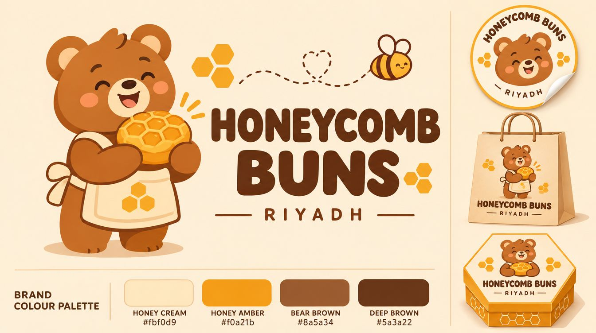
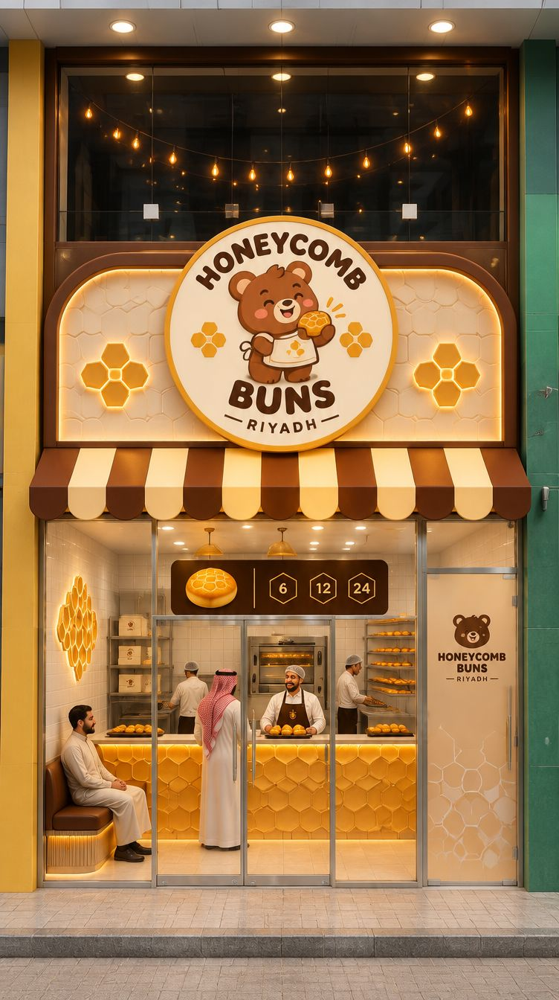
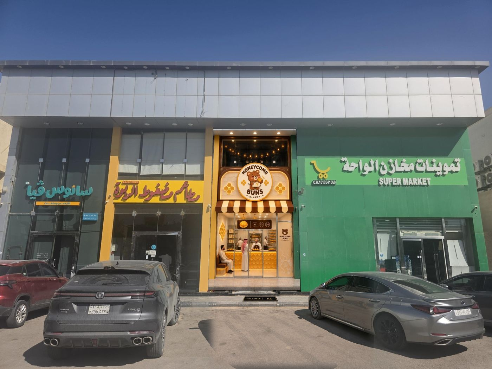
No Arabic name here: “HONEYCOMB BUNS RIYADH” simply describes the product (honeycomb buns). The bear is a universal symbol of honey: it loves honey, so the message is immediate for families and children, even without reading Arabic.
A cartoon bear holding a honeycomb bun: friendly, reassuring, very memorable for families and children. Caption HONEYCOMB BUNS RIYADH.
| Area | Material | Why / point of attention |
|---|---|---|
| Medallion | Painted aluminium disc or relief resin, back-lit | Mascot to be custom-made |
| Awning | Honey/chocolate striped acrylic canvas, anti-UV | Regular cleaning |
| Façade | Smooth cream plaster, rounded HPL border | Rounded corners = custom fabrication |
| Tile band | Honey-glazed hexagonal tiles | Resistant and washable |
| Frames | Brown powder-coated aluminium | Sober |
| Glazing | Clear double glazing | Maximum transparency |
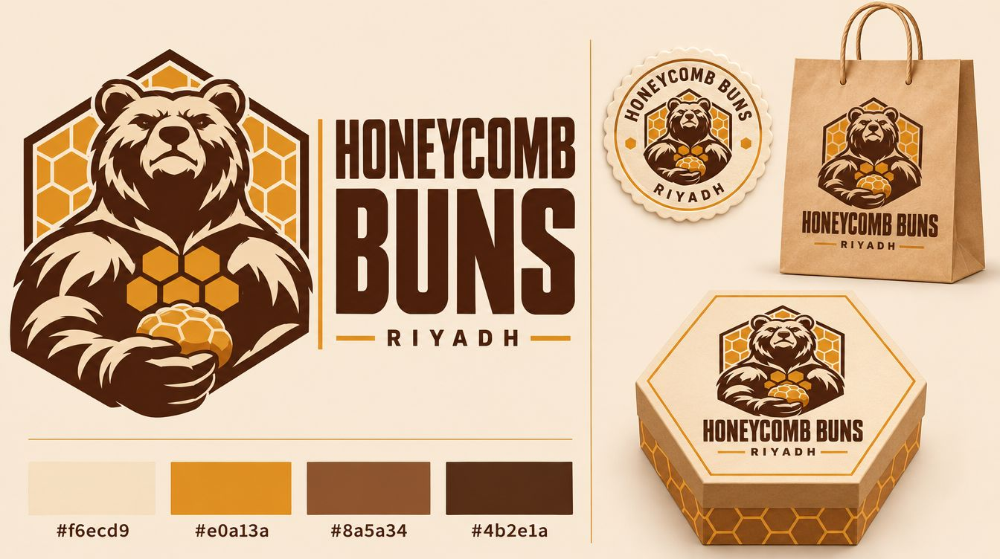
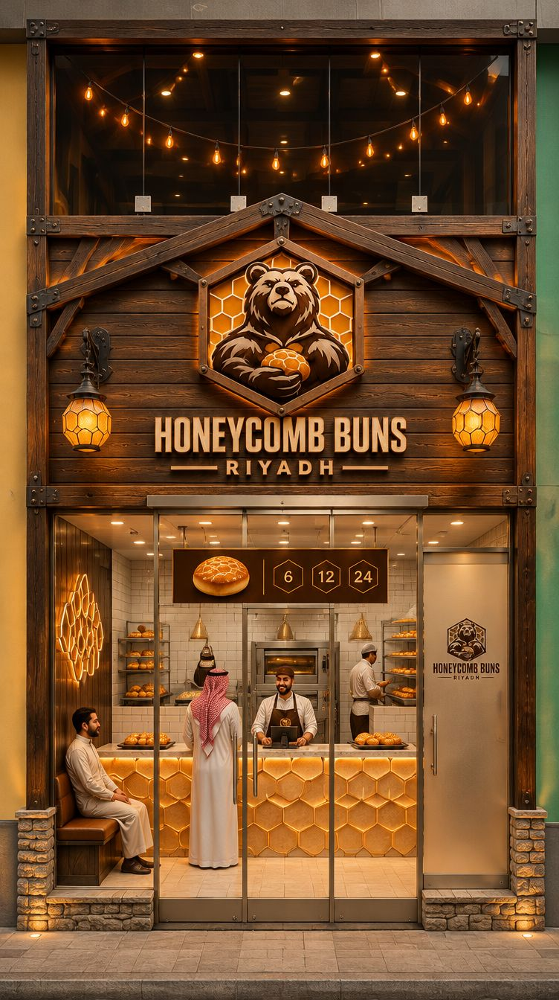
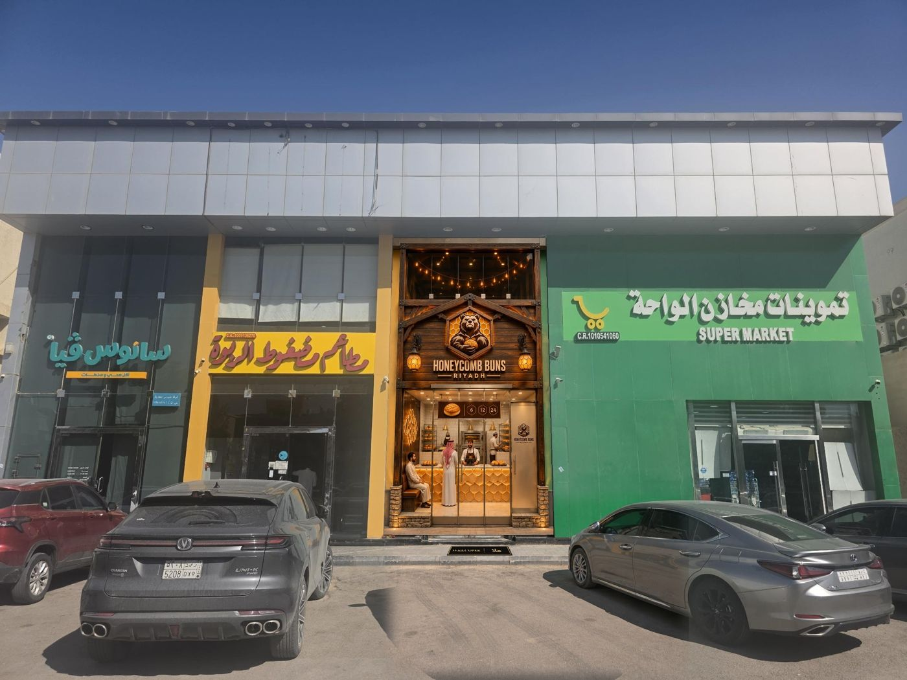
Same descriptive name “HONEYCOMB BUNS RIYADH”. The bear embodies strength, protection and a link with nature; it holds a honeycomb, like a guardian of the recipe.
A powerful bear in a hexagon, clutching a honeycomb: strength, protection, authenticity. A strong, more adult symbol that holds up well at large size.
| Area | Material | Why / point of attention |
|---|---|---|
| Cladding | Treated exterior wood stained dark, or wood-look aluminium | Bare wood ages quickly in the sun |
| Crest | Bas-relief in bronze-filled resin or real bronze | Resin: close look, lighter |
| Plinth | Reconstituted stone or stone-slip cladding | Protects against knocks |
| Lanterns | Lacquered wrought iron with amber glass, IP65 | Warm lighting |
| Counter | Amber hexagonal tiles | Consistent with the sign |
| Glazing | Wood or dark aluminium frame | Contrast with the walls |
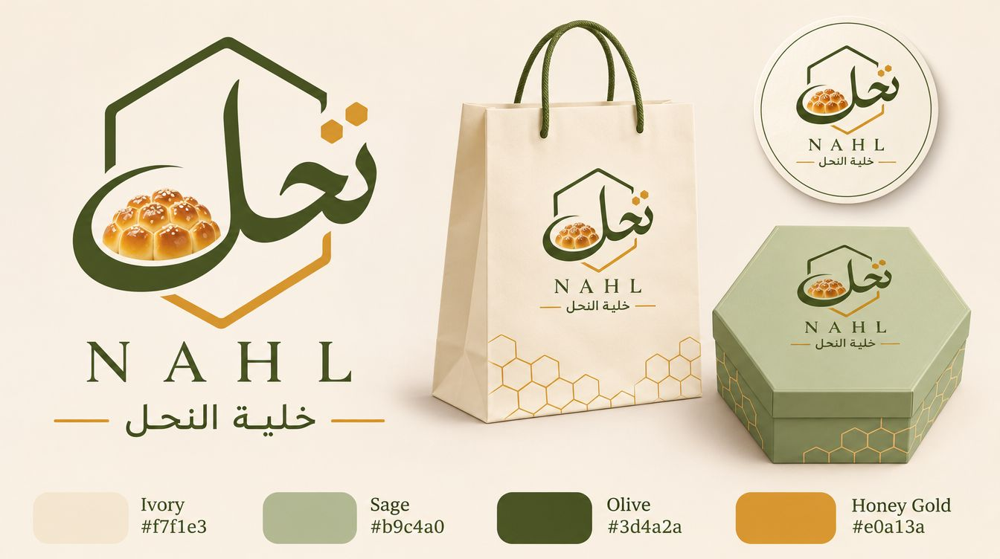
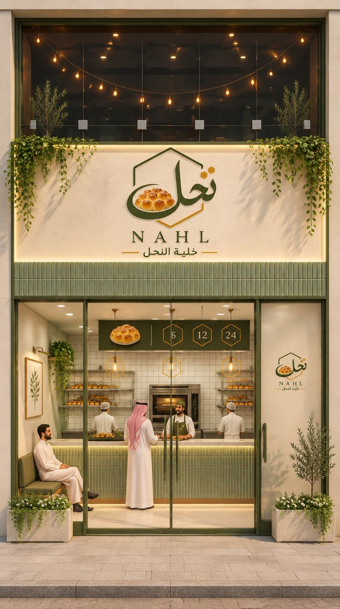
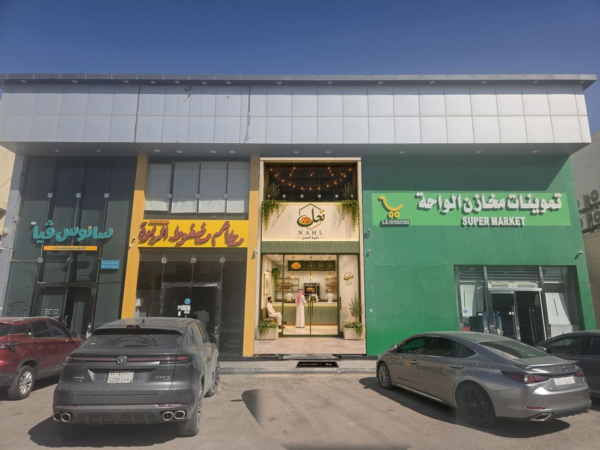
نحل (Nahl) means “bees”. It is also the name of a Quran surah, “An-Nahl” (The Bee). To be presented with respect: the name evokes a sacred text. It is accompanied by خلية النحل (the beehive).
The Arabic calligraphy نحل (“bees”) in an olive hexagon: elegance, quick reading, a link with tradition. A variant exists with the Riyadh skyline.
| Area | Material | Why / point of attention |
|---|---|---|
| Walls | Smooth ivory plaster | Plan an anti-dust treatment |
| Tiles | Sage-glazed fluted ceramic tiles | UV-resistant glaze |
| Frames | Olive green powder-coated aluminium | Sober and durable |
| Lamps | Hexagonal brass IP65, warm lighting | Signature detail |
| Plants | Built-in planters, undemanding local plants | Plan automatic watering |
| Glazing | Clear double glazing | Transparency |
No Arabic name: “HONEYCOMB BUNS RIYADH”. The emblem is a bear paw print drawn with honeycomb cells, a drop of honey at the bottom: the bear leaving its trace of honey.
A bear paw whose every pad is a honeycomb cell, with a drop of honey: simple, graphic, very recognisable on a box, a bag and the façade.
| Area | Material | Why / point of attention |
|---|---|---|
| Sign | Glossy amber lacquered aluminium panel, back-lit emblem | Glossy lacquer marks easily; exterior varnish recommended |
| Frames | Chocolate powder-coated aluminium | Sober and durable |
| Counter | Cream hexagonal tiles | Washable |
| Light | LED back-lighting of the paw, 3000 K | Readable at night |
| Glazing | Clear double glazing | Transparency |
| Lettering | Cut-out letters or print on panel | Same typeface as on packaging |
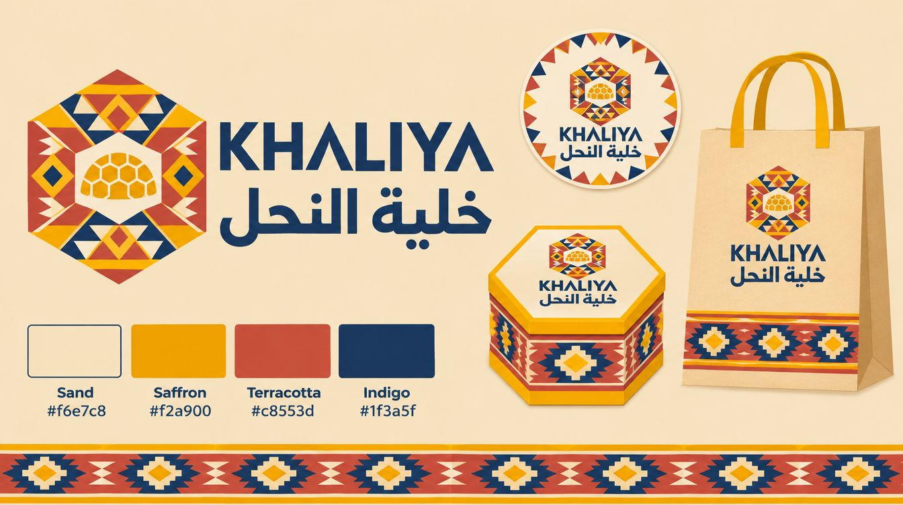
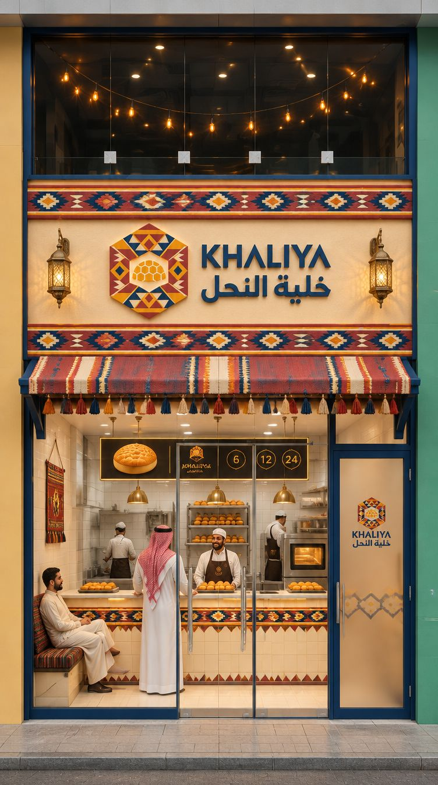
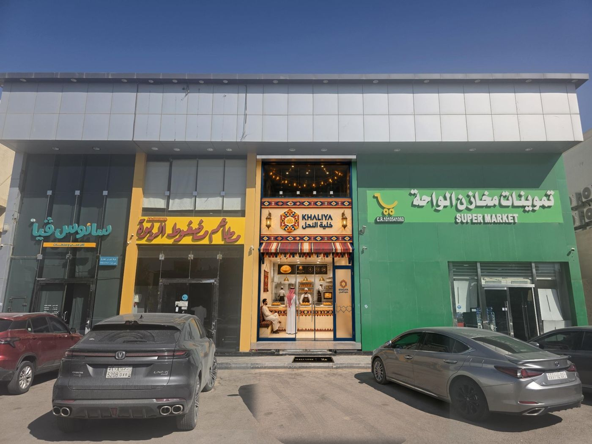
خلية (Khaliya) means “a cell, a hive” (the base word of خلية النحل). Sadu (السدو) is the traditional weaving of the Arabian Bedouin: coloured geometric bands. The logo associates the hive with weaving, two symbols of craftsmanship.
A hexagon with sadu patterns (traditional Bedouin weaving): local pride, bright warm colours, with Khaliya and خلية النحل.
| Area | Material | Why / point of attention |
|---|---|---|
| Sadu band | Printed aluminium panels or decorated ceramic | UV-resistant exterior print |
| Awning | Woven acrylic canvas with sadu pattern | Regular cleaning |
| Walls | Smooth sand plaster | Tinted through the mass |
| Frames | Indigo powder-coated aluminium | Sober |
| Lanterns | Brass IP65 | Warm lighting |
| Interior tapestry | Framed sadu fabric | Decorative detail |
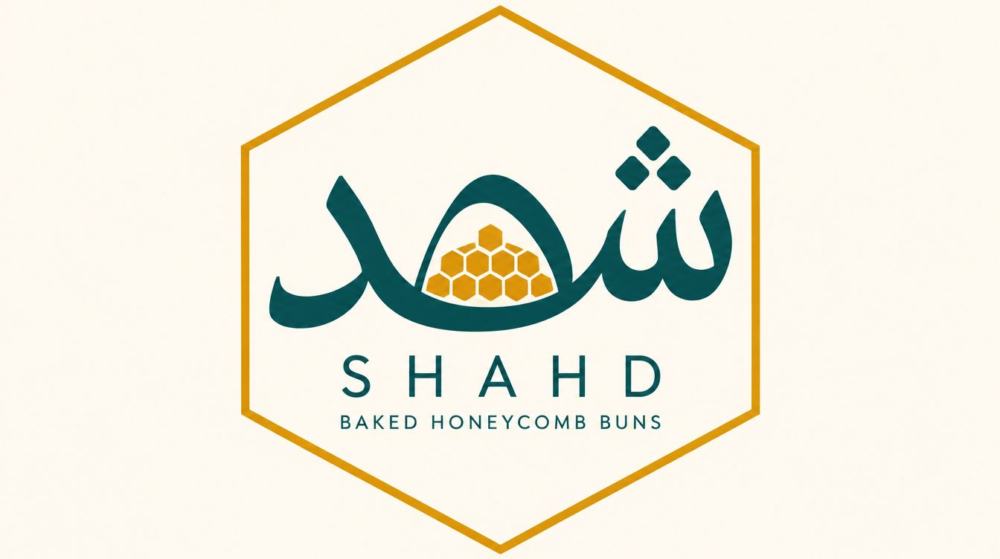
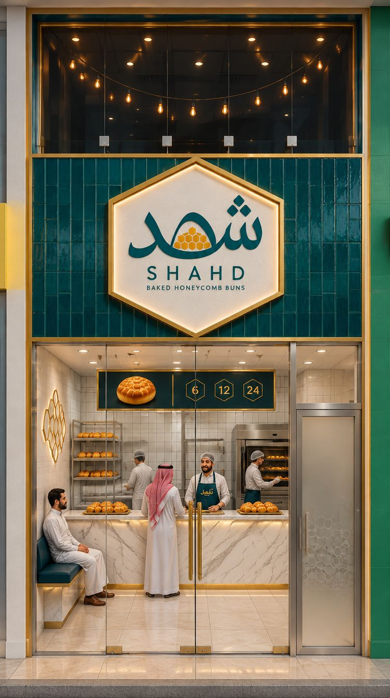
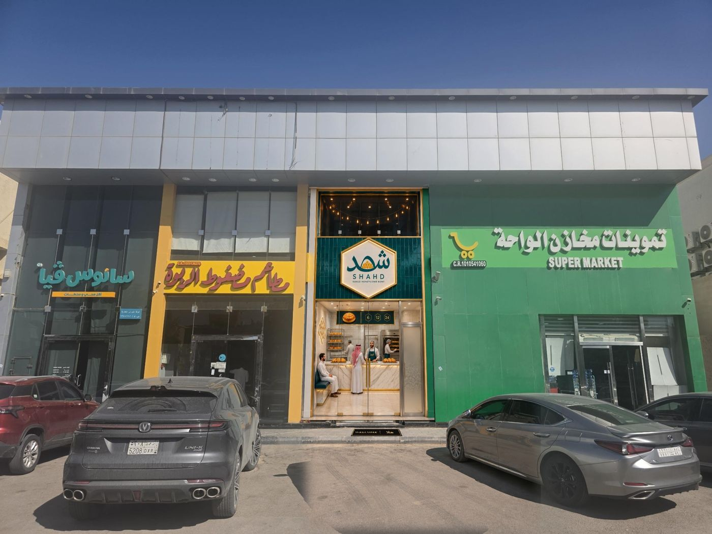
شهد (Shahd) means “honey”, more precisely honey in the comb, as it is in the hive. It is also a common female first name, which makes it soft and easy to remember.
شهد means “honey (in the comb)”. The calligraphy integrates a honeycomb in an elegant shape, framed by a gold hexagon: understated luxury.
| Area | Material | Why / point of attention |
|---|---|---|
| Tiles | Teal-glazed rectangular ceramic | Very resistant glaze |
| Hexagon | Gold anodised aluminium frame or PVD stainless steel | Avoids brass that tarnishes |
| Walls | Smooth white plaster | Anti-dust |
| Counter | White marble or marble-effect porcelain stoneware | Porcelain stoneware: more resistant |
| Lighting | 3000 K LED, integrated in the frame | Readable at night |
| Glazing | Gold or white aluminium, clear double glazing | Consistent with the sign |
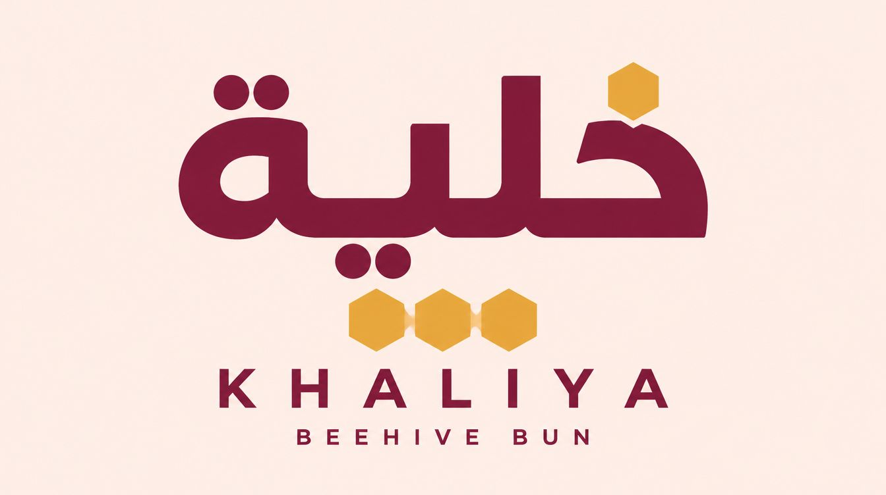
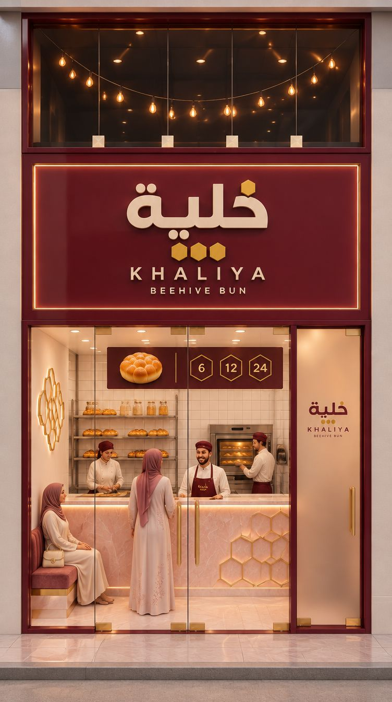
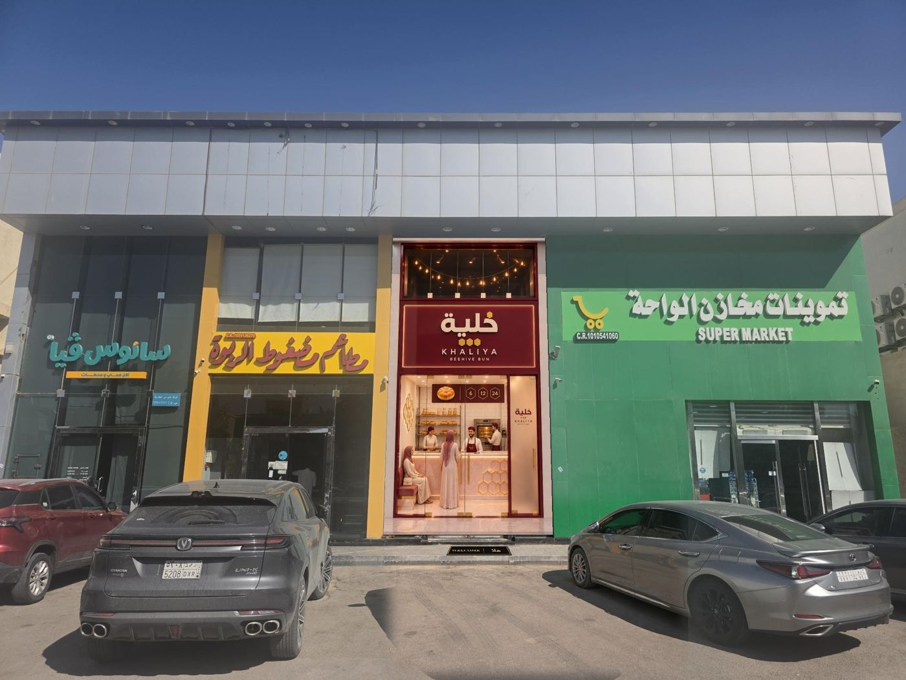
خلية (Khaliya) means “a cell, a hive”. The subtitle “BEEHIVE BUN” clarifies: it is the hive bun. The three gold hexagons represent the cells.
خلية in large calligraphy, with three gold hexagons: a very legible, elegant, more feminine and upscale logo.
| Area | Material | Why / point of attention |
|---|---|---|
| Panels | Burgundy lacquered aluminium or HPL | Exterior varnish |
| Counter | Pink marble or marble-effect porcelain stoneware | Porcelain stoneware: more resistant |
| Hexagons | Cut brass or gold PVD stainless steel | Signature pieces |
| Frames | Burgundy powder-coated aluminium | Sober |
| Lighting | Soft 2700 K LED | Warm atmosphere |
| Glazing | Clear double glazing | Transparency |
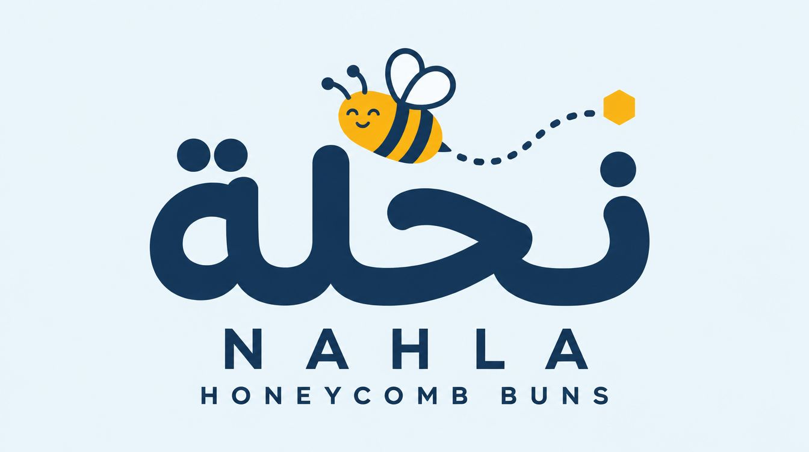
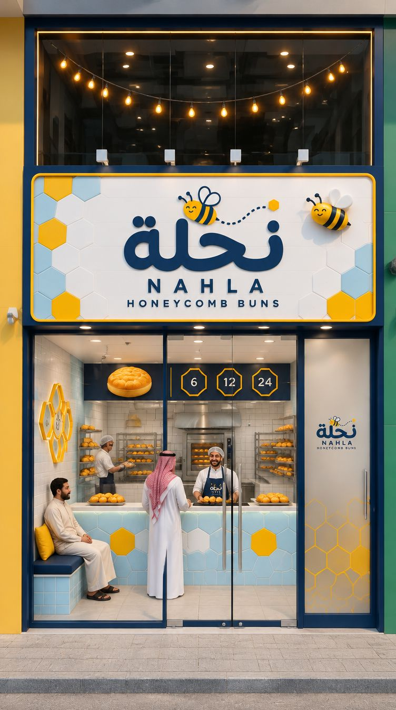
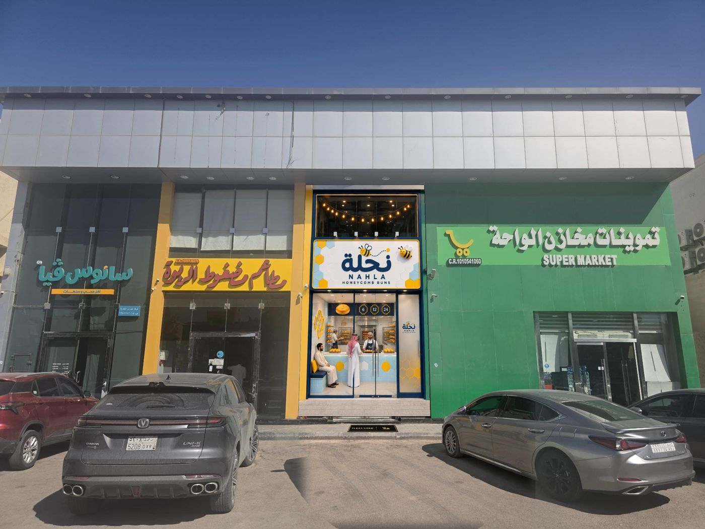
نحلة (Nahla) means “a bee” (singular). It is also a female first name. The bee drawn next to the word makes it a very lively and fun name.
نحلة means “a bee”. A midnight-blue Arabic letter with a little mischievous bee: fresh, modern, fun, different from all the others.
| Area | Material | Why / point of attention |
|---|---|---|
| Frames | Midnight-blue powder-coated aluminium | Sober and durable |
| Tiles | Sky-blue and white glazed ceramic tiles | Resistant glaze |
| Sign | Printed white aluminium panel, bee in relief | Bee sculpted in painted resin |
| Decor cells | Cut yellow vinyl or hexagonal tiles | Easy to renew |
| Counter | Sky-blue tiles | Washable |
| Glazing | Clear double glazing | Transparency |
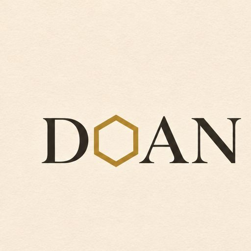
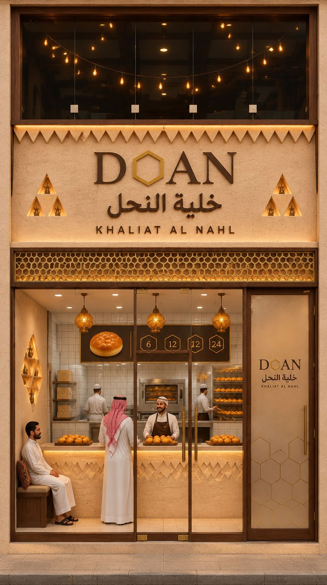
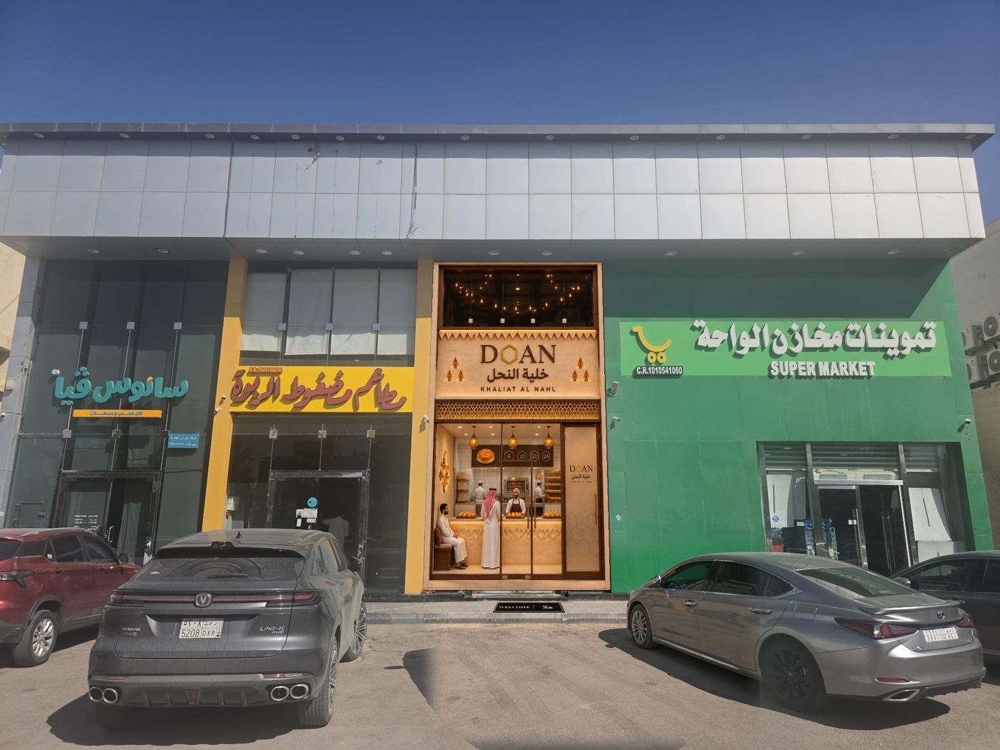
The hexagon replaces the O of DOAN: the cell becomes a letter, like a Najdi niche in a wall. Sober, elegant serif, very legible. Below, خلية النحل (the beehive) and KHALIAT AL NAHL.
| Area | Material | Why / point of attention |
|---|---|---|
| Façade | Lime plaster or sand-tinted mortar, float finish | Tint through the mass to limit touch-ups |
| Fascia and frames | Solid walnut or marine-varnished veneer, anti-UV | Special exterior varnish essential |
| Mashrabiya | Laser-cut brass or aluminium, brass finish | Anodised aluminium if budget is tight |
| Niches | Plastered recess with warm LED | Simple plaster/GRC motif |
| Lettering | Brass letters fixed on the fascia | Arabic and Latin in the same metal |
| Glazing and door | Dark brown powder-coated aluminium, clear double glazing | Consistent with the walnut |
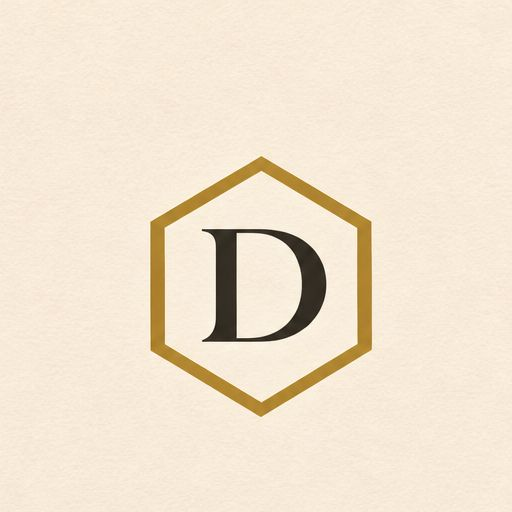
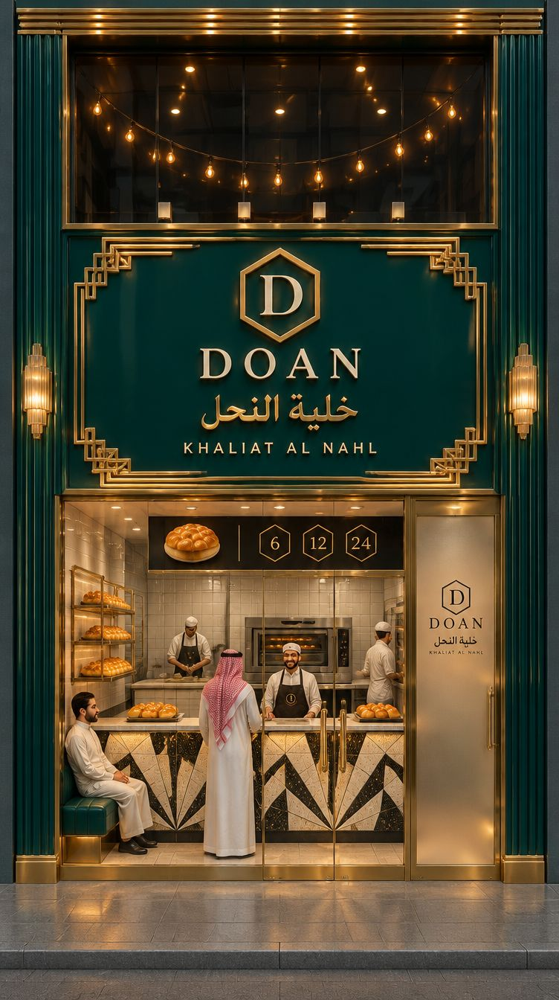
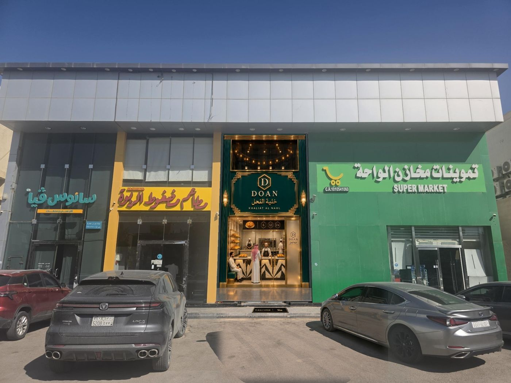
The D in a gold hexagon is a seal, like a luxury-house monogram. It makes DOAN a prestigious address. Below, خلية النحل and KHALIAT AL NAHL.
| Area | Material | Why / point of attention |
|---|---|---|
| Columns | GRC or moisture-resistant MDF in glossy teal lacquer, polyurethane varnish | Glossy lacquer marks easily; exterior varnish recommended |
| Brass frames | Brass-anodised aluminium or gold PVD stainless steel | Avoids real brass that tarnishes |
| D seal | Laser-cut back-lit brass | Custom signature piece |
| Low wall | Black and cream terrazzo | Very resistant, easy to clean |
| Lettering | Back-lit brass PVD stainless steel | Readable at night |
| Wall lights | Brass, exterior IP65 | Same family as the sign |
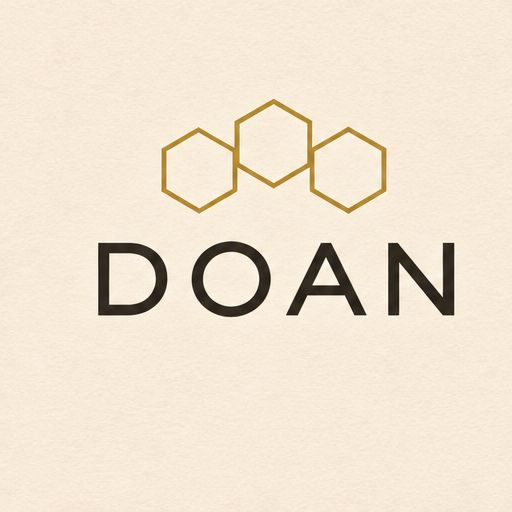
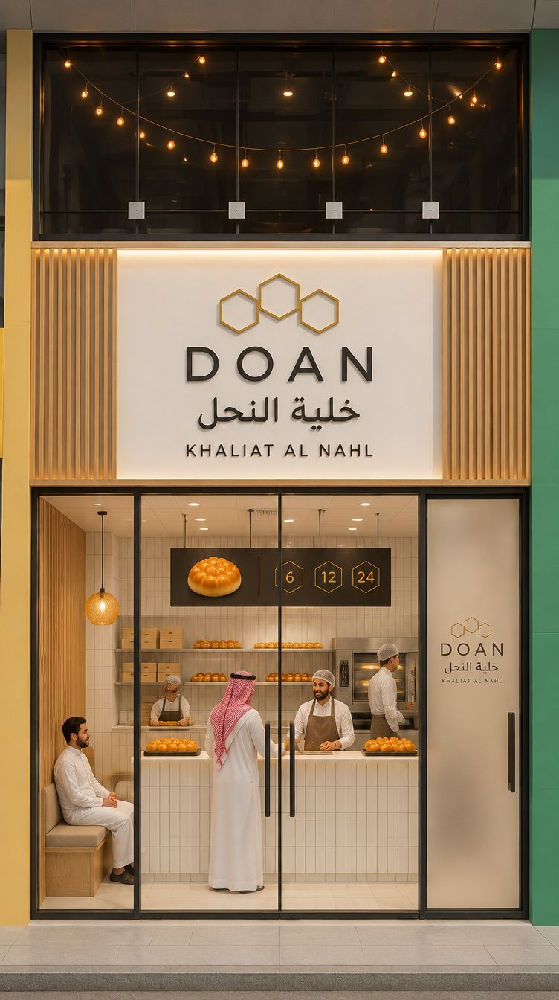
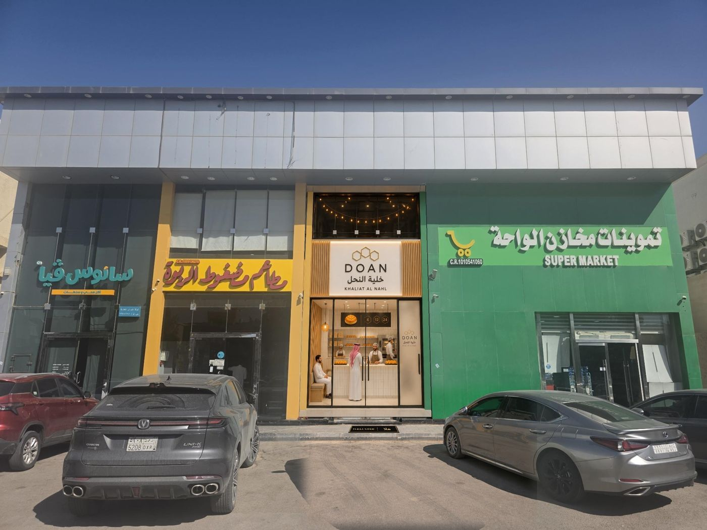
Three gold-wire cells above a spaced-out word: the idea of the cluster, very pared-down. The product provides the colour. Below, خلية النحل and KHALIAT AL NAHL.
| Area | Material | Why / point of attention |
|---|---|---|
| Slats | Heat-treated oak or wood-look aluminium | Wood-look aluminium: the most durable in Riyadh |
| Fascia | Matt white solid surface (Corian), exterior grade | Prone to UV yellowing if interior grade |
| Frames | Matt black powder-coated steel or aluminium | Slim and sober |
| Hexagons | Brushed brass or back-lit PVD stainless steel | Only warm metal |
| Lighting | Hidden cove LED, 2700 K | Soft light |
| Glazing | Extra-clear clear double glazing | Maximum transparency |
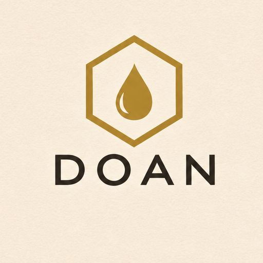
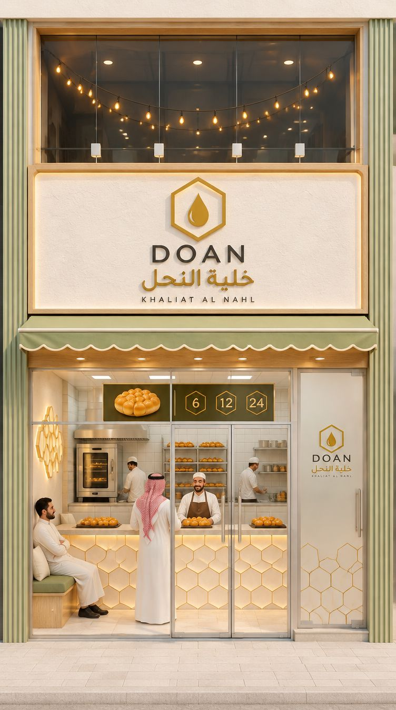
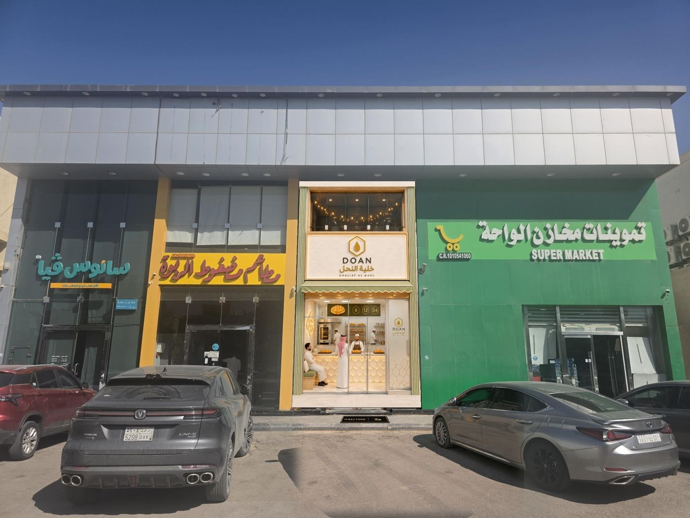
The drop in the hexagon says it all: honey + cell. The symbol is simple and works small (bag, sticker). Below, خلية النحل and KHALIAT AL NAHL.
| Area | Material | Why / point of attention |
|---|---|---|
| Façade | Smooth off-white plaster or light HPL | Plan an anti-dust treatment |
| Panels | Light oak or exterior oak-look laminate | Laminate holds up better than wood |
| Awning | Anti-UV sage acrylic canvas, aluminium structure | Regular cleaning |
| Pilasters | Lacquered fluted moisture-resistant MDF or painted GRC | Matt lacquer |
| Symbol | Brass or gilded resin in relief | Soft back-lighting |
| Glazing | White or light powder-coated aluminium | Bright overall look |
Seven cells in a flower, the central one filled with honey: the heart of the comb. Smile and indulgence. Caption HONEY BREAD, with خلية النحل and KHALIAT AL NAHL.
| Area | Material | Why / point of attention |
|---|---|---|
| Façade | Pistachio-glazed ceramic tiles, cream grout | Glaze very resistant to UV and sand |
| Awning | Cream/pistachio striped acrylic canvas | Regular cleaning |
| Sign | LED box, honey lettering | LED more reliable than glass neon |
| Chrome | Polished stainless steel | Chrome scratches more easily |
| Floor | Non-slip black and white checkerboard | Check the safety standard |
| Glazing | Rounded aluminium or stainless steel | Custom rounded corners |
The honey dipper in the hexagon: the artisanal, indulgent gesture. It suits a classic bakery décor. HONEY BREAD, خلية النحل and KHALIAT AL NAHL.
| Area | Material | Why / point of attention |
|---|---|---|
| Pilasters | Cream moulded reconstituted GRC stone | Stone look, lighter and durable |
| Shopfront | Black-green painted wood or powder-coated aluminium | Aluminium advised (heat) |
| Lettering | Gold leaf on glass or brass letters | Fixed on glass = very resistant |
| Threshold | Ceramic mosaic | Non-slip |
| Lanterns | Brass IP65 | Warm lighting |
| Glazing | Clear double glazing | Glazed façade |
The O is a hexagon with a drop: DOAN reads in one stroke, even at night. It goes well with a neon. HONEY BREAD, خلية النحل and KHALIAT AL NAHL.
| Area | Material | Why / point of attention |
|---|---|---|
| Façade | Fibre-cement/GRC panels with concrete texture | Concrete look without the weight |
| Sign | Amber silicone LED neon IP65 | More durable than glass |
| Frames | Black powder-coated steel, clear glazing | Avoid rust: powder coating |
| Menu box | Black aluminium, back-lit film | To be replaced with the real menu |
| Lamps | Black waterproof exterior pendants | Same family as the interior |
| Details | Brushed brass | Small touches |
The round badge is like a seal or the bottom of a tray: it is found on box, bag, sticker. HONEY BREAD, خلية النحل and KHALIAT AL NAHL.
| Area | Material | Why / point of attention |
|---|---|---|
| Plaster | Terracotta-tinted lime, float finish | Tinted through the mass |
| Zellige | Honey/ivory glazed hexagonal tiles | Resistant glaze; fine joints |
| Frames | Cedar or wood-decor aluminium | Aluminium advised outdoors |
| Awning | Linen/honey striped canvas, anti-UV | Regular cleaning |
| Lanterns | Lacquered wrought iron IP65 | Warm light |
| Sign | Round relief badge, resin or painted aluminium | Same badge on the packaging |